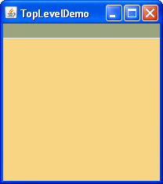
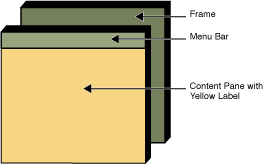
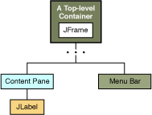
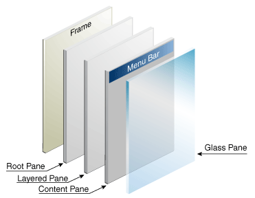

Como mencionamos antes, Swing ofrece tres clases contenedoras de nivel superior generalmente útiles:
JFrame, JDialog, y
JApplet. Cuando use estas clases, debería tener en cuenta estos hechos:
JInternalFrame imita a JFrame, los marcos internos no son en realidad
contenedores de nivel superior.
Aquí tiene una foto de un marco creado por una aplicación. El marco contiene una barra de menú verde (sin menús) y, en el panel de contenido del marco, una etiqueta grande en blanco, de amarillo.
|  |  |
Puede encontrar el fuente entero para este ejemplo en
TopLevelDemo.java. Aunque el ejemplo usa un JFrame en una aplicación
independiente, los mismos conceptos se aplican a JApplets y JDialogs.
Aquí tiene la jerarquia de contención para el IGU de este ejemplo:

Como las elipses implican, dejamos algunos detalles fuera de este diagrama. Revelamos los detalles un poco más tarde. Aquí están los temas que se tratan en esta sección:
Cada programa que usa componentes de Swing tiene al menos un contenedor de nivel superior. Este contenedor de nivel superior es la raíz de una jerarquía de contención ─ la jerarquía que contiene todos los componentes Swing que aparecen dentro del contenedor de nivel superior.
Por regla general, una aplicación independiente con una IGU basada en Swing tiene al menos una jerarquía de
contención con un JFrame como su raíz. Por ejemplo, si una aplicación tiene una ventana principal y
dos diálogos, entonces la aplicación tiene tres jerarquías de contención, y por lo tanto tres contenedores de
nivel superior. Una jerarquía de contención tiene un JFrame como su raíz, y cada uno de los otros
dos tiene un objeto JDialog como su raíz.
Un applet basado en Swing tiene al menos una jerarquía de contención, exactamente una de las cuales está
encabezada por un objeto JApplet. Por ejemplo, un applet que muestra un diálogo tiene dos
jerarquías de contención. Los componentes en la ventana del navegador están en una jerarquia de contención
encabezada por un objeto JApplet. El diálogo tiene una jerarquía de contención encabezada por un
objeto JDialog.
Aquí tiene el código que el ejemplo precedente usa para obtener el panel de contenido de un marco y añadir una etiqueta amarilla a él:
frame.getContentPane().add(yellowLabel, BorderLayout.CENTER);
Como muestra el código, encuentra el panel de contenido de un contenedor de nivel superior llamando al método
getContentPane. El panel de contenido por defecto es un contenedor simple intermedio que hereda de
JComponent, y que usa un BorderLayout como su gestor de disposición.
Es fácil personalizar el panel de contenido ─ establecer el gestor de disposición o añadir un
borde, por ejemplo. Sin embargo, hay un pequeño inconveniente. El método getContentPane devuelve
un objeto Container, no un objeto JComponent. Esto significa que si quiere tomar
ventaja de las características del JComponent del panel de contenido , necesita cambiar el tipo al
valor devuelto o crear su propio componente para que sea el panel de contenido. Nuestros ejemplos generalmente
toman la segunda forma, ya que es un poco más limpio. Otra forma que a veces usamos es simplemente añadir un
componente personalizado al panel de contenido, cubriendo el panel de contenido completamente.
Tenga en cuenta que el gestor de disposición por defecto para JPanel es FlowLayout; Es
probable que desee cambiarlo.
Para hacer un componente el panel de contenido, use el método setContentPane del contenedor de
nivel superior. Por ejemplo:
//Crea un panel y añade componentes a él.
JPanel contentPane = new JPanel(new BorderLayout());
contentPane.setBorder(someBorder);
contentPane.add(someComponent, BorderLayout.CENTER);
contentPane.add(anotherComponent, BorderLayout.PAGE_END);
topLevelContainer.setContentPane(contentPane);
Como conveniencia, el método add y sus variantes, remove y
setLayout han sido sobreescritas para reenviar a contentPane según sea necesario.
Esto significa que puede escribir
frame.add(child);
y el hijo será añadido al contentPane.
Tenga en cuenta que sólo estos tres métodos hacen esto. Esto significa que getLayout() no
devolverá la disposición establecida con setLayout().
En teoría, todos los contenedores de nivel superior pueden contener una barra de menús. En la práctica, sin
embargo, las barras de menú usualmente aparecen sólo en marcos y applets. Para añadir una barra de menús a un
contenedor de nivel superior, cree un objeto JMenuBar, llénelo con menús, y entonces llame a
setJMenuBar. La demostración TopLevelDemo añade una barra de menú a su marco con este
código:
frame.setJMenuBar(greenMenuBar);
Para más información sobre la implementación de menús y barras de menús, vea Cómo Usar Menús.
Cada contenedor de nivel superior se apoya en un contenedor intermedio recluso llamado el panel raíz. El panel raíz gestiona el panel de contenido y la barra de menús, junto con un par de otros contenedores. Generalmente no necesita saber sobre los paneles raíz para usar los componentes de Swing. Sin embargo, si alguna vez necesita interceptar pulsaciones del ratón o pintar sobre múltiples componentes, debería familiarizarse con los paneles raíz.
Aquí tiene una lista de los componentes que un panel raíz ofrece a un marco (y al resto de contenedores de nivel superior):

Ya le hemos hablado sobre el panel de contenido y de la barra de menús opcional. Los otros dos componentes que un panel raíz añade son un panel estructurado y un panel de vidrio. El panel estructurado contiene la barra de menús y el panel de contenido, y habilita el orden-Z de otros componentes. El panel de vidrio es a menudo usado para interceptar los eventos de entrada que ocurren sobre el contenedor de nivel superior, y puede ser usado también para pintar sobre múltiples componentes.
Para más detalles, vea Cómo Usar los Paneles Raíz.